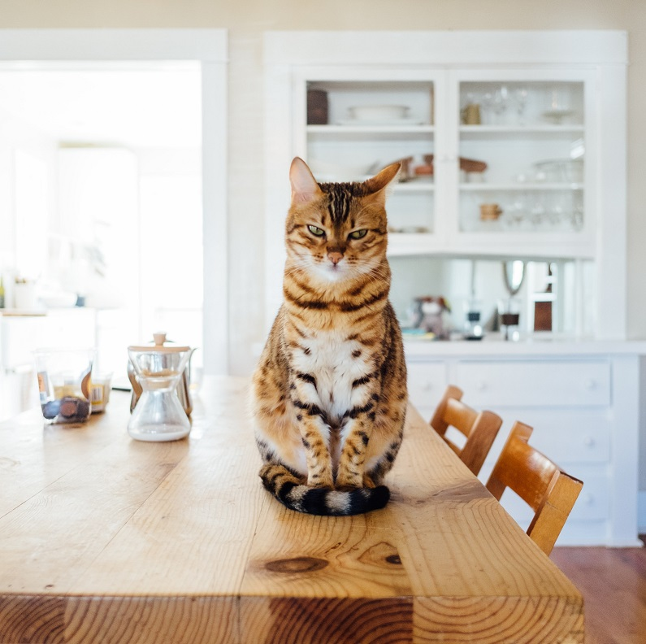
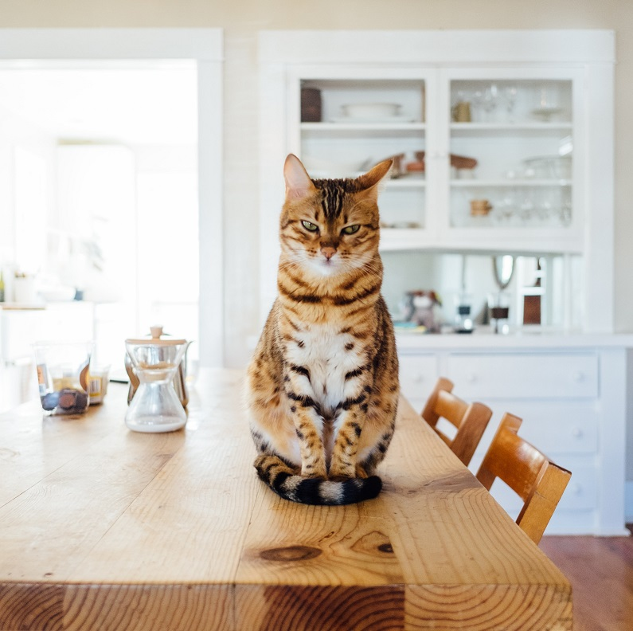

Our Story
From 2015, our founders, Alex and Matthew share the same goal and are dedicated to help any cat in need. It is estimated that there is in excess of 200,000 feral cat colonies across Ireland. Since my teeneage years I started to volounteer with small local animal shelters. After a few years of practise and a lot of research I did notice something quite odd: dogs are slighly more popular with pet owners. I kept on wondering why? With more years passing every single shelter was getting overcrowded and kittens were not getting enough space and resources for proper care. That's when it hit me. CatFinder is focused on bringing awerness to animal shelter adoptions, to give every single cat and kitty here a second chance at finding a forever loving homes. The more involved I became with animal shelters, I realized exactly how many animals are never given a second chance, and I wanted to try and do everything I could, to help their fate and change them dark statistics. Because we all deserve a place to belong to.
 
